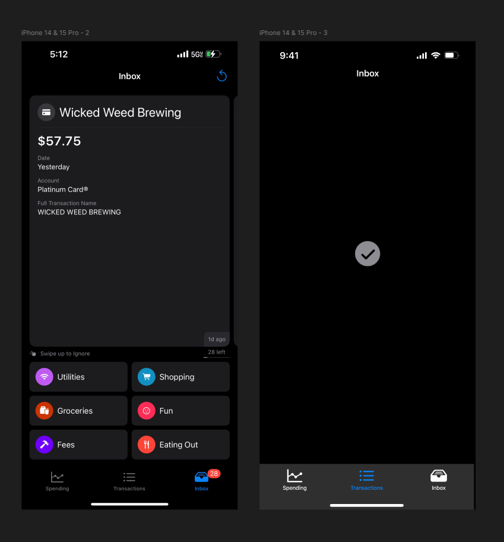

While I attended the University of North Carolina Chapel Hill, I applied to join an organization called App Team Carolina. While a member, I worked as a developer on the Centible startup team. Centible is a budgeting app targeted at college students, that lets you quicly sort your purchases into categories. I primarily worked with the UI/UX team, but I also helped create marketing materials and graphics.
One of the key features my team devised is the quick swipe screen where you categorize each purchase with just a tap.
When I arrived on the team, Centible was still early in development. I attended weekly meetings, contributing to the idea proccess and researching other apps. I worked with my team to design and eventually prototype the onboarding that users would go through in order to register their card on the app. I also worked with them to refine and tweak the color scheme and visuals of the app, giving it a consisitent theme.
Later on, our team was able to launch Centible to the app store, and the focus shifted more so to testing the app and patching bugs. This involved conducting research through surveys to see how users were navigating the app and any complaints they had, and working with my team to design the website.
In my last year at Carolina, I worked with the team to design new features that are yet to be implemented, such as multiple options for graphs, and custom categories. Later on, I created animations that could be implemented within the app in the onboarding proccess.